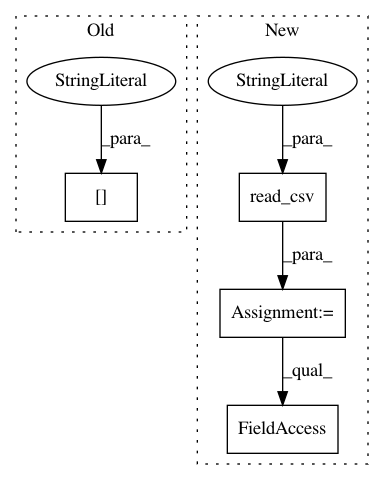

080080a547e9d89adf4393c2a349544443c35962,rnaseq/src/aggregate_rnaseqc_metrics.py,,,#,6
Before Change
annotation_headers = []
assert len(args.annotation_tsvs)==len(annotation_headers)
path_s = pd.read_csv(args.input_files_tsv, sep="\t", index_col=0, header=None, names=["sample_id","metrics_path"])["metrics_path"]
metrics_df = pd.concat([pd.read_csv(i, sep="\t") for i in path_s], axis=0)
metrics_df.index = metrics_df["Sample"]
// add optional annotations as additional columns
After Change
path_s = pd.read_csv(args.input_files_tsv, sep="\t", index_col=0, header=None, names=["sample_id","metrics_path"], squeeze=True)
// check format
df = pd.read_csv(path_s.iloc[0], sep="\t", header=None)
if df.shape[0]==2: // RNA-SeQC v1.1.9
dfs = [pd.read_csv(i, sep="\t") for i in path_s]
elif df.shape[1]==2: // RNA-SeQC v2
dfs = [pd.read_csv(i, sep="\t", header=None, index_col=0).T for i in path_s]
else:
raise ValueError("Unrecognized input format (shape {}).".format(df.shape))
metrics_df = pd.concat(dfs, axis=0)
metrics_df.index = metrics_df["Sample"]
In pattern: SUPERPATTERN
Frequency: 3
Non-data size: 4
Instances
Project Name: broadinstitute/gtex-pipeline
Commit Name: 080080a547e9d89adf4393c2a349544443c35962
Time: 2017-08-18
Author: francois@broadinstitute.org
File Name: rnaseq/src/aggregate_rnaseqc_metrics.py
Class Name:
Method Name:
Project Name: CNuge/kaggle-code
Commit Name: b7990885d8b26b9404fd9ce952b0b2f005019594
Time: 2018-01-12
Author: nugentc@uoguelph.ca
File Name: california_housing/feature_engineering.py
Class Name:
Method Name:
Project Name: QUANTAXIS/QUANTAXIS
Commit Name: 9d5565affe6314056373bf789868e8db714a3da8
Time: 2020-08-04
Author: yutiansut@qq.com
File Name: QUANTAXIS/QAFetch/QATdx.py
Class Name:
Method Name: QA_fetch_get_stock_list